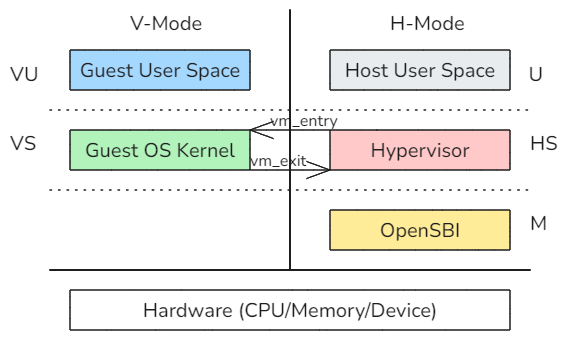
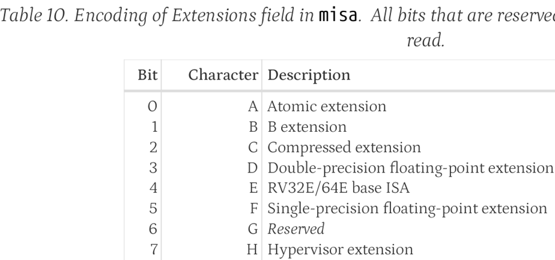
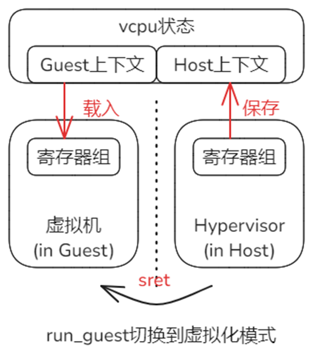
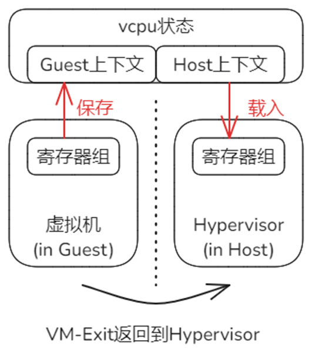

概述
本节介绍在RISC-V体系结构中，与CPU虚拟化相关的基本知识、原理和设计。
体系结构的虚拟化扩展 'H'
与x86等体系架构类似，RISC-V也采取了硬件辅助虚拟化的方式，以提升虚拟化效率，这种方式表现为对体系结构的一个扩展，代号'H'。

上图来自RISC-V官方文档，可以看出，虚拟化扩展'H' 在原有的非虚拟化世界基础上创造了一个平行的虚拟化世界。
虚拟化世界是一个虚拟的计算机环境，它包含了两个特权级，正好可以满足各类主流的客户操作系统（Guest OS）设计与机制上对特权级保护的需要，其中VS用于运行Guest OS的内核，VU用于运行Guest OS支撑的用户态应用。只要不触及敏感指令，整个Guest OS及其之上的应用都只会在这个虚拟世界中运行，如此就保证了较高的执行效率；只有执行到敏感指令，虚拟世界无法提供虚拟化支持时，才会跳回到非虚拟化世界，此时Hypervisor接管系统执行权，处理虚拟世界模式中无法处理的情况后，再返回到虚拟世界中继续运行。
特权级HS是让两个世界相互切换机制得以实现的关键，Hypervisor就运行在这个特权级。该特权级在原有S特权级的基础上增加了一些特性与机制，针对虚拟化，新增了一些寄存器，扩展了某些寄存器的属性位，例如，在一个特殊的寄存器标志位的控制下，HS特权级可以决定是向U还是向VS返回。（后面专门说明该寄存器标志位）
下面为'H'扩展的相关概念和机制给出更准确的描述。
-
非虚拟化世界 - 基本模式，或简称H-Mode。（在x86体系结构中，称为根模式）
-
虚拟化世界 - 虚拟模式，或简称V-Mode。（在x86体系结构中，称为非根模式）
按照'H'扩展的设计，模式与特权级之间是正交的关系。图1虽然直观，但未能很好的体现这种正交的关系，它应该是受到了模拟器层次示意图的影响。但Hypervisor与模拟器还是有明确的区别。下面是更准确的图示：
虚拟机是对物理机的“高效”复制，高效主要体现在虚拟机与物理机的“同质性”上，核心是CPU指令集的兼容，让虚拟机需要执行的大多数指令都可以不须翻译过程，而直接运行在物理CPU上。
Guest所在的虚拟机运行在V-Mode模式中，一般的CPU指令直接由物理CPU执行，并不需要Hypervisor这一层次的中介干预，这是主流；只是在触及敏感指令才会切换到H-Mode，由Hypervisor处理。由于触及敏感指令是相对少数的情况，所以上面的正交关系示意图应该是更为合理的表述。
本节只是涉及CPU虚拟化，事实上，对于内存和设备虚拟化来说，如果Hypervisor已经完成了特定物理页帧与Guest的分配关联，如果对特定外设采取了Passthrough的方案，那么Guest在运行中同样是直通物理硬件，而不需要Hypervisor作为中介干预的，Hypervisor在此类情况下，只是提前为Guest做了setup的工作。
CPU虚拟化涉及的关键对象及相互关系
在CPU虚拟化方面涉及的关键对象主要包括vCPU、虚拟机VM、物理CPU、任务Task和运行队列RUN_QUEUE，其中任务Task与运行队列由ArceOS提供，Hypervisor基于对它们的扩展和使用来实现所需的功能，它们的关系如下：

以vCPU为起点进行分析，它是虚拟化世界中逻辑执行的主体。
每个虚拟机VM至少有一个vCPU，称为Primary vCPU，也是Boot vCPU。在此基础上，虚拟机VM可以包含更多的Secondary vCPU。这些从属于同一个虚拟机的vCPU在执行上是相互独立的，它们可以在不同的物理CPU上被同时调度执行。
vCPU实现的基础是ArceOS中的Task，它们可以看作是同一个对象在不同层面各自的表现形式，即在虚拟世界中表现为vCPU，而在ArceOS Hypervisor中的运行形式就是Task。
每个物理CPU有自己的RUN_QUEUE，如果想指定vCPU在某个或某组物理CPU上执行，只要把vCPU对应Task调度到相应的RUN_QUEUE即可。
虚拟机首次启动前的准备
虚拟机VM首次启动前，Hypervisor需要为其检查和准备必要的条件。与CPU相关的核心工作：
-
检查确认硬件平台支持‘H'扩展
底层平台必须支持RISC-V的’H'扩展，首先OpenSBI固件在启动时会检查misa寄存器的第7个状态位，如果是1表示支持虚拟化扩展。
Hypervisor可以通过查看OpenSBI的输出来确定是否支持。但目前Hypervisor采取的方式是：直接尝试读hgatp，如果读失败，则说明底层平台不支持‘H’扩展。
OpenSBI可以通过把misa的第7位设置为0，来从固件层面关闭对虚拟化的支持。
-
设置寄存器hstatus状态，为切换到虚拟化模式做准备
特权级HS是U特权级切换和VS特权级切换的汇聚点，执行sret进行特权级返回时，通过hstatus的SPV这一位来确定返回的方向。
SPV这一位的作用是保存进入HS特权级之前的原始模式，如果是0，表示之前是非虚拟化模式，即从U特权级切换而来；如果是1，表示之前是在虚拟化模式中运行，即从VS特权级切换而来。

Hypervisor在首次进入虚拟机之前，把hstatus的SPV设置为1，这样将来在执行sret时就能够确保进入到虚拟机中运行。
-
设置Guest寄存器sepc和sstatus，指定Guest OS 内核最初启动的指令地址和状态
预先为Guest伪造现场，当虚拟器首次启动时，将从Guest OS内核的入口开始执行。

准备工作完成后，Hypervisor通过VM-Entry过程首次启动虚拟机（实际是启动Primary vCPU），由此进入一个循环：

虚拟机启动后，Guest OS的内核与用户态应用在虚拟环境中运行，如同在物理机器中运行；触及敏感指令时将触发VM-Exit过程，退出虚拟化模式，控制权返回到Hypervisor，Hypervisor根据退出原因进行相应的处理，然后再次经由VM-Entry过程进入虚拟机，Guest将从上次执行的断点处恢复执行，如同从未被打断执行一样。如此循环往复，直至虚拟机关闭。
VM-Entry: 从Host到Guest
VM-Entry是从Host环境进入Guest环境的过程，在体系结构的层面看，物理CPU需要完成从非虚拟化模式到虚拟化模式的切换。在切换过程中，一些跨模式共享的寄存器就可能遭到破坏。因此，Hypervisor需要在物理层执行切换前，预先保存部分寄存器组的状态到Host上下文中。此外，物理层面的模式切换完成后，会立即基于当时的寄存器状态继续工作，因此还需要在模式切换前，从Guest上下文中恢复相关寄存器到上次离开Guest环境到状态。vCPU代表了虚拟环境中独立的执行流，因此Host和Guest上下文同一由vCPU来维护。
具体到RISC-V体系结构，对于VM-Entry，保存/恢复上下文的工作在_run_guest中完成，最后执行sret指令完成物理CPU的模式切换。过程_run_guest定义在riscv_vcpu/src/trap.S文件中，关键的数据结构和过程如下：
-
RISCV_VCPU保存寄存器上下文的结构，参见riscv_cpu/src/vcpu.rs和riscv_cpu/src/regs.rs
#![allow(unused)] fn main() { pub struct RISCVVCpu<H: AxVCpuHal> { regs: VmCpuRegisters, ... ... } pub struct VmCpuRegisters { // CPU state that's shared between our's and the guest's execution environment. Saved/restored // when entering/exiting a VM. pub hyp_regs: HypervisorCpuState, pub guest_regs: GuestCpuState, ... ... }每个RISCV_VCPU实例中通过regs成员保存寄存器状态，具体又分为Host上下文hyp_regs和Guest上下文guest_regs。
-
向_run_guest传入上下文数据区的起始地址，参见riscv_vcpu/src/vcpu.rs
RISCV_VCPU的主运行方法run在调用_run_guest时，会传入其regs成员的地址作为参数。
#![allow(unused)] fn main() { fn run(&mut self) -> AxResult<AxVCpuExitReason> { ... ... // Safe to run the guest as it only touches memory assigned to it by being owned // by its page table _run_guest(&mut self.regs); ... ... }RISCV_VCPU成员regs的地址作为第一个参数，在汇编层面保存在a0寄存器中。
-
过程_run_guest关于保存Host上下文的实现，参见riscv_vcpu/src/trap.S
接上面，_run_guest中的a0保存的是RISCV_VCPU的成员regs的开始地址，加上偏移就可以访问到Host/Guest两组上下文中存放各个寄存器的具体位置。
_run_guest: /* Save hypervisor state */ /* Save hypervisor GPRs (except T0-T6 and a0, which is GuestInfo and stashed in sscratch) */ sd ra, ({hyp_ra})(a0) sd gp, ({hyp_gp})(a0) sd tp, ({hyp_tp})(a0) ... ... -
过程_run_guest关于恢复Guest上下文的实现
#![allow(unused)] fn main() { /* Restore the gprs from this GuestInfo */ ld ra, ({guest_ra})(a0) ld gp, ({guest_gp})(a0) ld tp, ({guest_tp})(a0) ... ... }为Guest运行提前准备，把涉及的寄存器状态从上下文中恢复出来。
-
执行模式切换，进入到虚拟机执行Guest OS
在前面已经保存和恢复上下文的基础上，通过指令
sret完成物理CPU模式的切换，进入到Guest环境中执行。
VM-Exit：从Gust返回Host
VM-Exit是虚拟机无法满足虚拟化条件时，从体系结构硬件发起的、由特殊trap响应函数配合的自动过程。从执行逻辑上看，它基本上是GuestVM-Entry的逆向过程。
-
VM-Exit过程的触发
VM-Exit过程的触发是物理硬件的基本机制，相当于宏内核模式下，低特权级程序在执行某些特权操作时所触发的trap过程。软件层面Hypervisor需要做的工作就是在上次执行_run_guest时，提前注册响应函数_guest_exit。
/* Set stvec so that hypervisor resumes after the sret when the guest exits. */ la t1, _guest_exit csrrw t1, stvec, t1 ...对于RISC-V，寄存器stvec保存trap响应函数入口表的起始地址，对于虚拟化导致的trap同样适用。
-
VM-Exit的响应过程
响应过程主体就是_guest_exit的实现，参见riscv_vcpu/src/trap.S
.align 2 _guest_exit: /* Pull GuestInfo out of sscratch, swapping with guest's a0 */ csrrw a0, sscratch, a0 /* Save guest GPRs. */ sd ra, ({guest_ra})(a0) sd gp, ({guest_gp})(a0) sd tp, ({guest_tp})(a0) ... ... ret由于逻辑上基本是_run_guest的逆过程，不再赘述。但是需要特别注意该过程的最后一行是
ret指令，是普通的函数返回指令，原理是从寄存器ra取出返回地址后跳转。回顾VM-Entry中切换模式进入虚拟机时，执行的是_run_guest，如下：#![allow(unused)] fn main() { fn run(&mut self) -> AxResult<AxVCpuExitReason> { ... ... // Safe to run the guest as it only touches memory assigned to it by being owned // by its page table _run_guest(&mut self.regs); ... ... // <- Reg 'ra' points to this line. }当时寄存器ra保存的就是_run_guest函数的下一行指令代码地址，所以此时执行
ret的效果就是返回到该处继续执行。从Hypervisor的角度看，它执行_run_guest的效果就如同执行了一次普通的函数调用，但是内部已经经历了一次从进入虚拟机到退出虚拟机的完整周期。
附1：参考资料
RISC-V官方指令手册中，关于‘H’扩展的章节。
riscv-docs/riscv-privileged-20211203.pdf at main · konpoe/riscv-docs
附2：vCPU与物理CPU绑定
如正文所述，Hypervisor基于对ArceOS的扩展实现。vCPU与ArceOS的Task是一体的，因此vCPU与物理CPU的绑定关系是通过Task与物理CPU的绑定关系来实现的。
ArceOS提供了要给cpumask的功能，即通过位图的形式指定Task可以被哪些RUN_QUEUE所执行，RUN_QUEUE与物理CPU是一一对应的关系，由此可以实现vCPU到物理CPU的绑定。